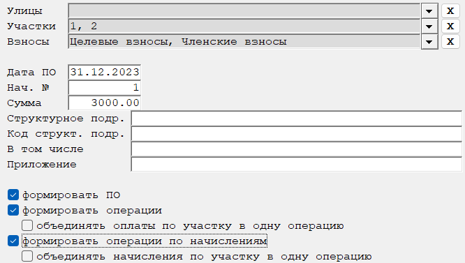
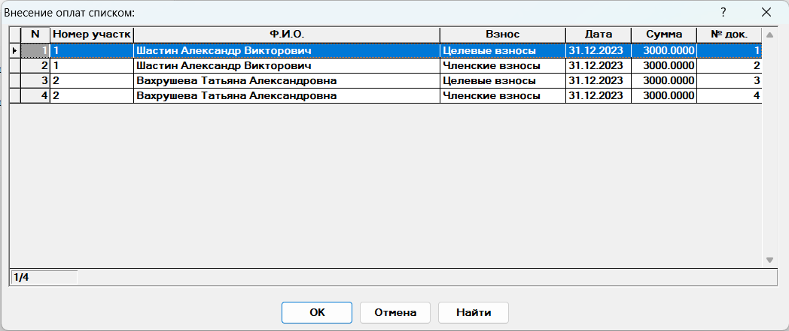
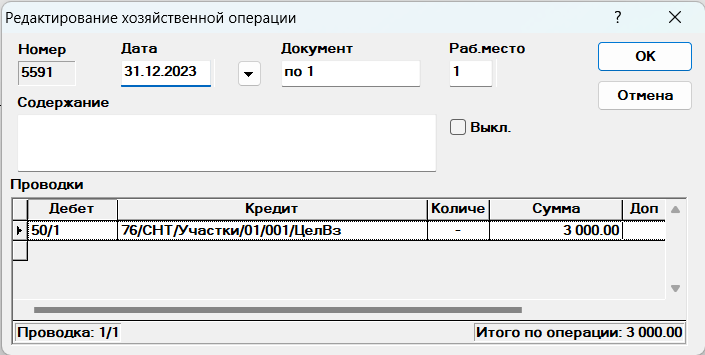
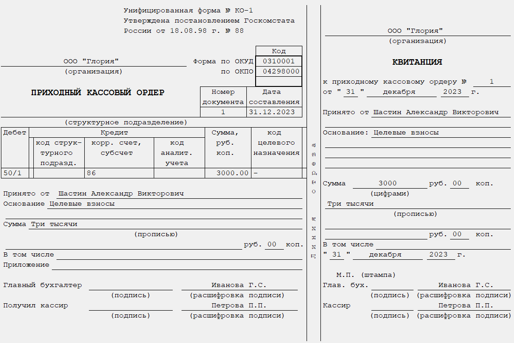

Бланк " Поступление платы (списком с приходными ордерами)"
Данный бланк предназначен для внесения оплаты по участку (рис. 1).

Рис. 1. Бланк " Поступление платы (списком с приходными ордерами)"Рассмотрим поля, необходимые для заполнения:
-
Улицы — выбираются улицы, по которым необходимо выполнить расчет. Возможен выбор произвольного количества улиц. Если оставить графу пустой, то отбор будет осуществляться по всем улицам.
-
Участки — выбираются участки, по которым необходимо выполнить расчет. Возможен выбор произвольного количества участков. Если оставить графу пустой, то отбор будет осуществляться по всем участкам.
-
Взносы — выбираются взносы, по которым необходимо выполнить расчет. Возможен выбор произвольного количества взносов. Если оставить графу пустой, то отбор будет осуществляться по всем взносам.
-
Дата оп. - дата составления документа/внесения оплаты.
-
Нач. № - указывается начальный номер номер документа. Присутствует автоматическая нумерация. Если документ с указанным номером уже существует, то будет выведено предупреждение.
-
Сумма - сумма платежа.
-
формировать ПО - признак формирование печатной формы приходного ордера.
-
формировать операции - признак формирования операций по оплате.
-
объединять оплаты по участку в одну операцию - признак объединения всех операций по оплате по участку в одну операцию.
-
формировать операции по начислениям - признак формирования операций по начислению.
-
объединять начисления по участку в одну операцию - признак объединения всех операций по начислению по участку в одну операцию.
После заполнения полей, влияющих на расчет, необходимо пересчитать
бланк. Для этого нажмите кнопку
 на панели инструментов, клавишу F9, или комбинацию
клавиш Ctrl + Enter.
на панели инструментов, клавишу F9, или комбинацию
клавиш Ctrl + Enter.
После пересчета на экране отобразится на экране отобразится список для редактирования дат и сумм оплат, который будет сформирован в соответствии с выбранным Вами методом внесения оплат (рис. 2).

Рис. 2. Список для редактирования дат и сумм оплатПосле нажатия на кнопку ОК будет выведены окна редактирования хозяйственных операций (если установлена настройка редактирования хозяйственных операций) (рис. 3)

Рис. 3. Окно редактирования хозяйственной операциии будут напечатаны приходные ордера, если стоит настройка печати приходного ордера (рис. 4).

Рис. 4. Приходный кассовый ордер